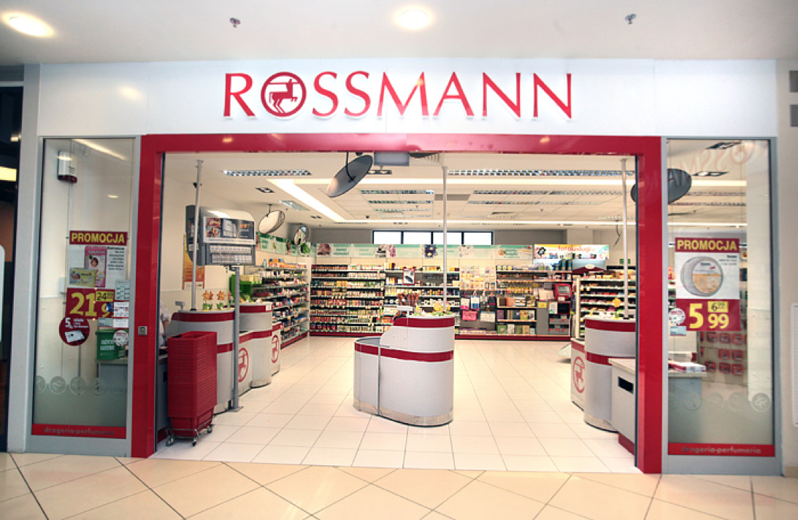
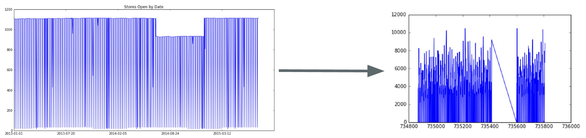
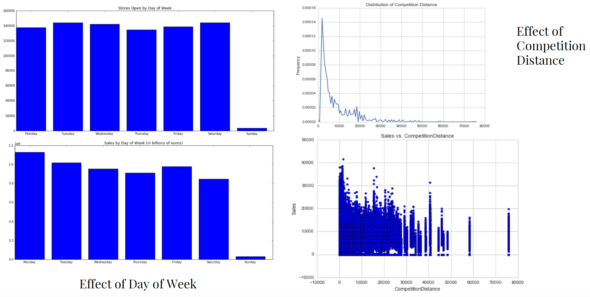
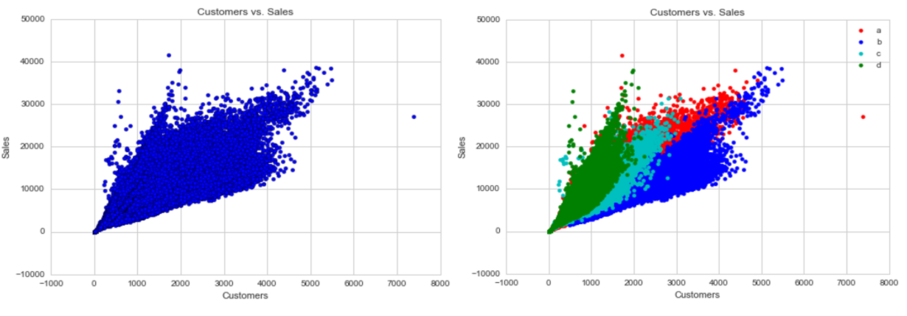
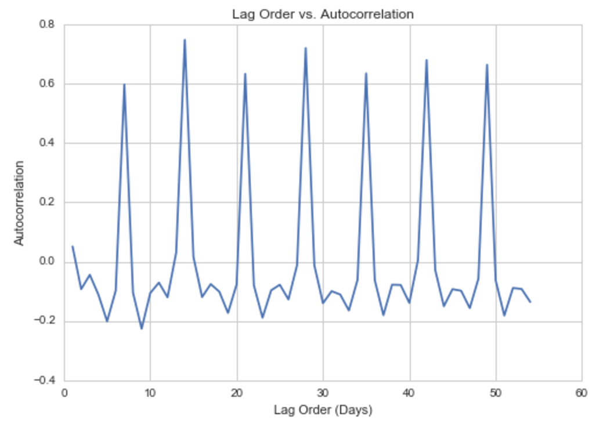
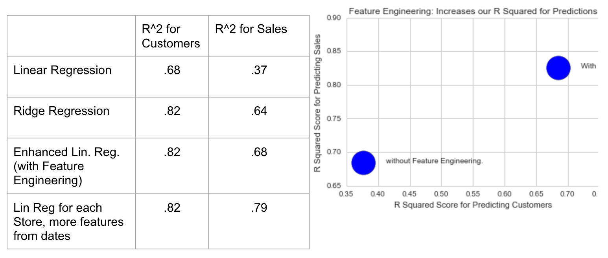

An Introduction to Rossmann Sales, by Harsha Uppilli, He Li, Jenny Wang
After failed pleas to private equity firms for buyout and to the German government for bailout money, the massive drugstore chain Schlecker shut its doors in 2012. In total, 3200 stores were shut down and 13,200 employees lost their jobs, even though the workers were willing to take pay cuts to help the company stay afloat. The company, which was founded in 1975 and once oversaw a roster of over 14,000 stores and 50,000 employees and posted annual sales of over 7 billion euros, was forced to declare bankruptcy due to “business problems” (Dw.com).

This case study is an example of how fickle the brick and mortar drugstore business can be. If capital is not deployed strategically, or inventory is not managed well, optimal sales will not be reached, and the store will lose money. Therefore, it is extremely important to be able to accurately predict sales so that managers can be best equipped to optimize store performance in advance.
 Today, Rossmann is the largest drugstore in Germany. Rossmann store managers are responsible for predicting their daily sales for up to 6 weeks in advance. This is a difficult problem, as there are so many factors that can influence sales.
Today, Rossmann is the largest drugstore in Germany. Rossmann store managers are responsible for predicting their daily sales for up to 6 weeks in advance. This is a difficult problem, as there are so many factors that can influence sales.
Related Work
There have been a number of groups who have looked into this problem. After reading the current literature on Rossmann sales, we found that existing papers featured the following models: Linear Regression, (Xgboost) Random Forests, Gradient Boosting Regression, Hidden Markov Model, Recurrent Neural Networks and Support Vector Regression. The best approaches across these paper, in terms of the Root Mean Square Percentage Error (or RMSPE) metric, were Support Vector Regression (Lin et. al) and Gradient Boosting regression model (Knott et. al.).
Background + Data Cleaning
We were given sales data for 1115 Rossmann drugstores over a time period of two years. After exploring the data, we found that for 184 days in the two year period, 180 stores were temporarily closed for refurbishment. Thus, in order to build a model, we needed to fill in the data for these stores when they were closed. The parameters in the given dataset were Store (ID of store), DayOFWeek (M, T, W, T, F, S, S), Date (Month-Date-Year), Sales (in dollars), Customers (number of customers), Open (if the store was open or closed that day), Promo (if the store was holding a promotion), StateHoliday (if the day was a state holiday), SchoolHoliday (if the day was a school holiday). Our initial model for this step to fill in the missin dat was to use KNN (such as estimating sales using the sales of the open stores on that date, or data from that specific store using the closest dates) and Logistic Regression (converting the date timestamps into integers in order to model the time series data). Ultimately, due to constraints on computing power (in the case of KNN) and a goal of maximizing accuracy, we decided to interpolate and fill in the missing data in the following manner: 1) For Sales and Customers data, we take the median value across other data points with similar or matching values for the DayOfWeek, Promo, and Open predictors. 2) For binary predictors such as StateHoliday or SchoolHoliday, we inpute whatever the majority vote across all stores for that day was.
In the image above, the left hand image shows the number of stores open per day, and the 184 day period where a fraction of the stores were closed for refurbishment is evident. On the right is the date vs. sales graph for one of the stores that underwent reburbishment (Store 13), and we can see the sharp drop in the graph during that period.
More Data Exploration: Important Trends
Predicting Customers and Sales
In order to build a model to predict Rossmann sales, we needed to create a two-step model. First you must predict the number of customers each store will recieve. Then, using the customers and the other parameters, you can predict the sales. Our baseline models were Linear Regression and Ridge Regression.
Feature Engineering + separate model for each store
We also looked at correlations for each store between sales on certain days and sales on days past, and found that sales from multiples of 7 days ago were strongly correlated with each other - that is, sales from 7 days ago, 14 days ago, 35 days ago, etc. were all correlated with each other. This makes sense intuitively, as behavior on a weekly basis tends to be stable, from Monday compared to Monday, from Thursday compared to Thursday.
To take some of these patterns over time into account, we added a few features to the dataset: the year, the month, the day, and the quarter. Finally, we built a separate linear regression model for each store, relying on its sales and customer patterns over time, along with these extra features to predict sales and customer traffic on test dates. By focusing on each store individually, and adding year, month, day, and quarter as features, we were able to see a substantial gain in the R2 score for predicting sales figures (0.790668889002), while maintaining a solid R2 for predicting customers (0.81661110172). This is consistent with the idea, expressed earlier, that using the dates as features would take advantage of the correlations between dates for sales and customer figures.
Final Model + Results
We explored multiple models in our process of creating a final model for accurate Rossmann Store Sales prediction. Some of the models that we built but did not decide to use as our final model include Vector Autoregression (which did not produce very accurate results) and Decision Trees (we realized that tree based models such as Random Forests would require first placing sales data into buckets). Ultimately, we decided to use a Feature Engineering based model (with the features as our final model year, month, day, quarter). In this model, we found the average number of customers, for each store, across all days, and then appended this data as part of a new feature. Below, we see that Feature Engineering greatly increased the accuracy from the baseline model.
Future Work
With more time and computing power, there are several approaches we would love to explore more in order to expand on and improve our current model. These include:
- Non-linear Tree-based models: as mentioned above, we would need to first figure out a mechanism to would need to group sales output into buckets without inadvertently introducing bias or error. Such models include Random forests, Xgboost, SVM.
- More analysis on store type (a, b, c, d): We were given the types of the stores but were not given context as to what the letters meant. With most business-related and financial context from Rossmann we can utilize this additional information to create a more robust model.
- Other criteria and approaches for optimal model: We could use AIC, BIC, Stepwise or LASSO model selection, PCA for model selection or variable selection. We found that since we were not given a huge set of variables and the individual effect of each variable was not negligible, we includes all of the variables in our current final model.
- More data + additional attributes: A big part of data science is the collection and cleaning of data. In order to create an even more meaningful model, we would propose to Rossmann to collect the following data: customer satisfaction, pricing relative to competitors, effect of advertising, performance on various subsets of products, seasonal product demand. With more data we can continue to refine the model, given that factors like customer happiness and competitor performance do have sizable effects on sales.
Support or Contact
Check out out github repo to see the IPython Notebook!